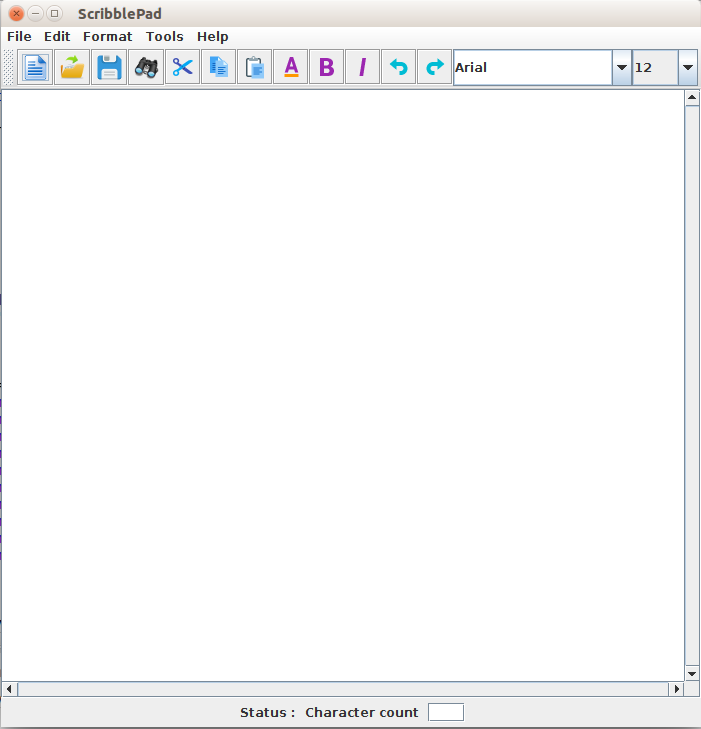

ScribblePad - The Text Editor
ScribblePad is a text-editing program for writing, viewing and editing text files. ScribblePad does all the basic functions that a basic text editor does and some added, additional features. The description of all the features and how they can be used in this editor have been explained in detailed below.
Developed by Kannan Kuttalam (SUID - 537415425) and Divya Radhakrishnan Prabhakaran (SUID - 499259820)
FEATURES - WHAT AND HOW
New File - Creating a new file can be done by either clicking on the New button in the toolbar or by clicking File->New. New creates a new text file.
Open File - This feature will let you open a desired file by choosing from the directory. Click open button on the toolbar or File->Open. A FileChooser dialog box will appear and you can select a text file and click on OK.
Save File - This feature will let you save your text file. If you wish to save a .java file and save it with a .java extension, the java keywords present in the filw will get automatically highlighted. Click save button on the toolbar or File->Save. In the dialog box that will appear enter the name of your file with a .txt or .java extension and save.
Cancel - This feature will get you out of this program. Click File-> Cancel.
Cut - This feature will help you cut a selected piece of text. Cutting will remove that piece of code from that position completely. Click Cut button or Edit-> Cut or right click anywhere on the text area and choose Cut from the right click menu.
Copy - This feature will help you copy a selected piece of text. Copying will just have another copy of the text in the clipboard. It doesnt cut. Click Copy button on the toolbar or Edit -> Copy or right click anywhere on the text area and choose Copy from the right click menu.
Paste - This feature will paste the selected text that has been cut or copied previously and present in the clipboard. Place the cursor in the text area where you want to paste the text and click Paste button on the toolbar or Edit -> Paste or right click anywhere on the text area and choose Paste from the right click menu.
SelectAll - This feature selects all of the text in the text area in one click. Click Edit-> SelectAll or right click anywhere on the text area and choose SelectAll from the right click menu.
Find And Replace - This feature will let you to search for a particular word in the entire text and if you wish you can replace all of the occurances of the word or can replace one by one. To use this feature click FindAndReplace icon in the toolbar or click Edit-> FindAndReplace
A seperate window will appear with fields to mention the word to be searched and a field for the word to replae the found occurences.
- Find - This button on clicking will find all the occurences of the specified word and highlights them
- Replace - This button on clicking will replace the first ocurence of the found word. Clicking again will replace the next occurence and so on.
- ReplaceAll - This button replaces all the occurences of the found word in one go.
- Cancel - This button will let you come out of the Find And Replace window and to the main window.
Undo - Undo reverses the recent editing commands before saving the file. For undo click undo button on the toolbar or click Edit->Undo.
Redo - Redo will remove the changes done by undo. To redo click redo button on the toolbar or click Edit->Redo.
Theme - You can choose from the three available themes for ScribblePad. The three available themes are metal ( default theme), nimbus and system. To change your theme, click Format->Theme->Nimbus or Metal or System.
Bold - To make a selected text bold, click Bold icon on the toolbar or Format-> Bold.
Italics - To make a selected text italic, click Italic button on the toolbar or Format->Italic.
Font Style - To choose a font style for your text or selected text alone, you can choose from the available font styles from the combo box on the toolbar. Select the text whose style has to be changed and click on the desired style from the combo box. The selected text will change style.
Font Size - To choose a font size for your text or selected text alone, you can choose from the available font size from the combo box on the toolbar. Select the text whose size has to be changed and click on the desired size from the combo box. The selected text will change size.
Font Color - You can change the colour of the font of the selected text through this feature. For changing the colour,select the text, click Format-> Font Color or choose FontColor icon button on the toolbar. From the dialog box, choose the desired colour from the available range of colours and click OK to change the colour of the font.
File Compare - If you want to compare your current file with another text or .java file for similarities, this FileCompare feature will be of aid to you. FileCompare compares the current .txt or .java with another file specified by you for similarities. This feature can be used by clicking Tools-> File Compare.
Send Mail - You can send a selected text as a mail to a desired mail ID. If you want to mail a selected text, select the text, click Tools -> Send Mail or right click anywhere on the textarea and choose SendMail from the right click menu. Enter the mail address to which the mail has to be sent and click send.
Mail would be sent from scribblepadproject@gmail.com , created for testing purposes
Send text - You can send a selected text as a text to a desired valid US phone number. If you want to text a selected text, select the text, click Tools -> Send SMS or right click anywhere on the textarea and choose SendSMS from the right click menu. Enter the US phone number to which the SMS has to be sent and click send.
About - Help -> About has a detailed description of ScribblePad and its features.
Character Count - You can check the total character count of the text file in the status bar at the bottom of the window. The character count will keep updating as you type or remove charcters.
TECHNICAL SPECIFICATIONS
- Platform - All platforms.
- API's Used - Java swing, Java mail, Twilio
- Concurrency - Can work on multiple windows at the same time concurrently.
In case of any queries or comments e-mail us at kkuttala@syr.edu or diradhak@syr.edu